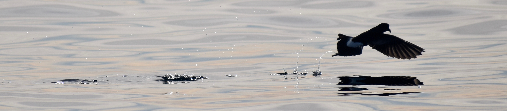

Haver, SM, Rand, Z, Hatch, LT, Lipski, D, Dziak, RP, Gedamke, J, Haxel, J, Heppell, SA, Jahncke, J, McKenna, MF, Mellinger, DK, Oestreich, WK, Roche, L, Ryan, JP, and Van Parijs, SM, 2020 : Seasonal trends and primary contributors to the low frequency soundscape of the Cordell Bank National Marine Sanctuary. Journal of the Acoustical Society of America. PDF
Oestreich, WK, Chapman, MS, and Crowder, LB, 2020: A comparative analysis of dynamic management in marine and terrestrial systems. Frontiers in Ecology and the Environment. PDF
Oestreich, WK, Frawley, TH, Mansfield, EJ, Green, KM, Green, SJ, Naggea, J, Selgrath, JC, Swanson, SS, Urteaga, J, White, TD, and Crowder, LB, 2019: The impact of environmental change on small-scale fishing communities: Moving beyond adaptive capacity to community response in Cisneros-Montemayor, AM, Cheung, W, and Ota, Y (ed). Predicting future oceans: Sustainability of social-ecological systems under climate change. Elsevier. New York, NY. PDF
Glover, DM, Doney, SC, Oestreich, WK, and Tullo, A, 2018: Geostatistical analysis of mesoscale spatial variability and error in SeaWiFS and MODIS/Aqua global ocean color data. Journal of Geophysical Research: Oceans 123, 22-39. PDF
Swain, TD, Vega-Perkins, JB, Oestreich, WK, Triebold, C, DuBois, E, Henss, J, Baird, A, Siple, M, Backman, V, and Marcelino, L, 2016: Coral Bleaching Response Index: a new tool to standardize and compare susceptibility to thermal bleaching. Global Change Biology 22, 2475-2488. PDF
Oestreich, WK, Ganju, NK, Pohlman, JW, and Suttles, SE, 2016: Colored dissolved organic matter in eutrophic estuaries: relationships between carbon sources and light attenuation. Biogeosciences 13, 583-595. PDF

Image: Oceanites oceanicus dances across a bay along the Western Antarctic Peninsula.
In review, submission, or preparation:
Cade, DE, et al. including Oestreich, WK: Predator-scale spatial analysis of intra-patch prey distribution reveals energetic drivers of rorqual whale super-group formation (In revision at Functional Ecology).
Cade, DE, et al. including Oestreich, WK: Group exploitation of extensive, ephemeral, environmentally-controlled prey patches (In review at Oikos).
Kitzes, J et al. including Oestreich, WK: Expanding the National Ecological Observatory Network (NEON) biodiversity surveys with new instrumentation and machine learning models. (In review at Ecography).
Chapman, MS*, Oestreich, WK*, et al.: Promoting equity in scientific recommendations for high seas governance. (In prep).